L'ULTIMA ECLISSI
L'ombra della nera eclissi
Acheron: L'Ultima Fiamma
> IL MONDO CHE TI ASPETTA
Acheron non è un parco giochi. È un test di resilienza dove ogni scelta incide sul destino della collettività. Qui, la sopravvivenza non è un diritto individuale, ma un risultato collettivo. Ti attende un mondo sull'orlo dell'abisso, dove l'oscurità non è solo assenza di luce, ma un predatore affamato.
Il Ciclo dell'Eclissi
Il mondo vive un respiro ciclico. Quando l'Eclissi avvolge Acheron, le leggi della natura mutano. Le tue abilità saranno l'unico scudo contro l'entropia che minaccia di cancellare l'ultima roccaforte dell'umanità.
Progressione senza Retromarcia
Ogni specializzazione, ogni mestiere, ogni scelta tattica è definitiva. Non esistono scorciatoie: le tue abilità crescono col tempo e con l'esperienza sul campo. Chi sarai quando la luce svanirà?
Perché unirsi ad Acheron?
- Cooperazione Necessaria: Nessuno si salva da solo. Il tuo contributo come Foraggiatore, Artefice, Radiciere o Fregiatore è il pilastro della civiltà.
- Loot Dinamico: Un sistema di equipaggiamento profondo, basato su affissi e rarità, che premia l'esplorazione e la strategia.
- Immersione Totale: Un'ambientazione dark fantasy coerente, dove il silenzio degli dei e la violenza dell'Eclissi dettano il ritmo di gioco.
- Interfaccia Modulare: Un client progettato per darti il controllo tattico totale, permettendoti di adattare la visuale al tuo stile di sopravvivenza.
L'Eclissi è alle porte. Dimostra il tuo valore, o lascia che Acheron svanisca.
Ambientazione
Il mondo di Acheron è intrappolato in un ciclo apparentemente eterno di luce e oscurità. Periodicamente, un'eclissi totale si abbatte sul mondo, gettandolo nel caos e nella disperazione.
Questo evento non è solo un fenomeno astronomico; è il momento in cui gli dei scendono a combattere sulla terra. La durata dell'eclissi e l'intensità della battaglia variano, ma c'è sempre l'incognita se la prossima sarà l'ultima eclissi con l'annientamento totale di ciò che esiste. Questa paura ha plasmato la società e la cultura del mondo.
Valdris
Valdris sorge come l'ultimo, vero baluardo contro l'Eclissi. È una metropoli medievale costruita interamente in pietra oscura e rinforzata da imponenti strutture metalliche. Le sue mura, incise con rune di protezione antiche, sono costantemente sorvegliate.
All'interno delle sue mura, il tempo sembra sospeso. La città è un labirinto di vicoli angusti, mercati sotterranei illuminati da lanterne fatue e officine dove gli Artefici lavorano senza sosta. Nonostante la disperazione che aleggia all'esterno, a Valdris la vita cerca di resistere, alimentata dalla fede in un nuovo domani e dal costante bisogno di risorse preziose.
Accampamenti
SEGNAPOSTO ACCAMPAMENTO.
Razze
Le genti di Acheron sono plasmate dalla durezza del mondo. Ogni razza ha adattato la propria natura per sopravvivere all'incedere costante dell'oscurità.
UMANI - I baluardi dell'equilibrio
In un mondo che tende inevitabilmente verso gli estremi, gli umani rappresentano l'unica vera costante. Non possiedono la grazia innaturale dei Kroth né l'oscura maestria degli Eclissati, ma la loro forza risiede in un adattamento senza pari. Sono il collante di questo regno in rovina: capaci di impugnare una spada, studiare una pergamena o negoziare un prezzo con la stessa naturalezza. Dove le altre razze falliscono, l'Umano persiste. La loro versatilità non è solo un vantaggio, è l'unica ragione per cui la civiltà non si è ancora dissolta nel fango. Scegliere l'Umano significa scegliere il pragmatismo, l'equilibrio e la capacità di diventare chiunque il destino richieda.
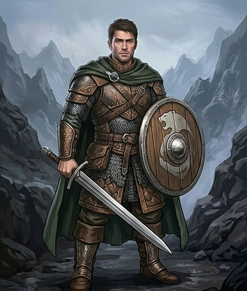
KROTH - I sussurri delle paludi
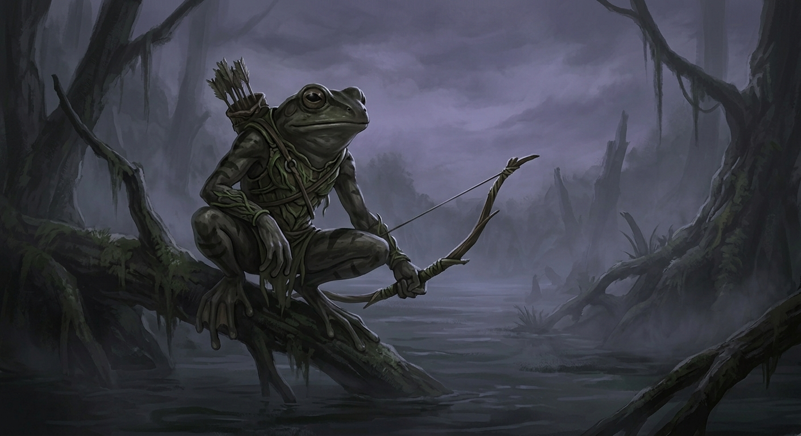
Dicono che i Kroth siano nati dal pianto dimenticato di un dio del mare, e che la loro pelle ricordi ancora il freddo degli abissi. Qualunque sia la verità, ciò che è certo è che sono esseri di un'agilità disturbante, capaci di scivolare tra le ombre delle paludi con una fluidità sorprendente. La loro perfezione tuttavia ha un prezzo: la sete. Il bisogno di idratazione dei Kroth è un rito quotidiano di sopravvivenza; una condizione che li costringe a cercare costantemente il "fluido vitale" per non vedere il loro spirito spegnersi. Questa ossessione per i liquidi li ha resi i più grandi artigiani di pozioni e intrugli che il regno abbia mai conosciuto. Se hai bisogno che una ferita guarisca in fretta, cerca un Kroth... ma ricorda che su Acheron tutto ha un prezzo, e la loro sete non conosce sosta.
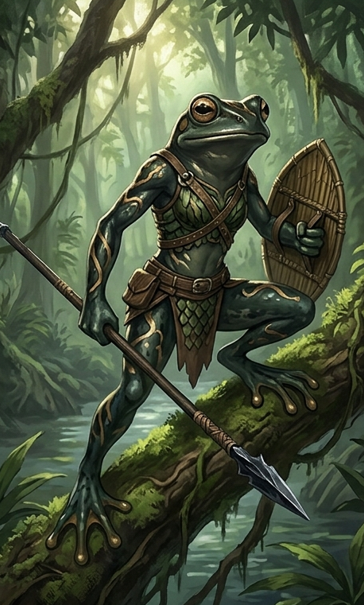
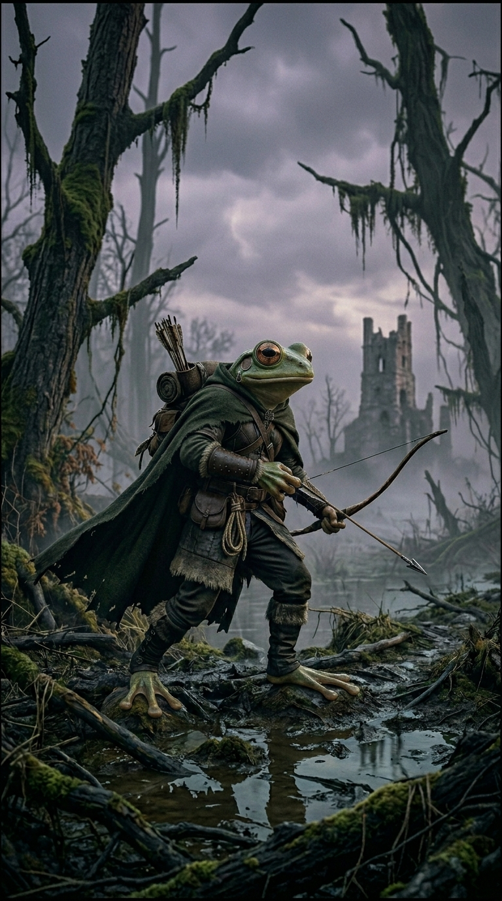
ECLISSATI
Il sole è il loro più grande nemico, un velo accecante che li condanna a un'esistenza di cieca impotenza durante le ore di luce. Ma quando l'astro diurno scompare e la tenebra avvolge la pianura, gli Eclissati si risvegliano nella loro vera forma. Dotati di una visione che squarcia il buio più profondo, sono gli unici in grado di scrutare i segreti che la notte protegge. Questa affinità con l'oscurità li rende i più grandi maestri fabbri e cercatori del regno: il ferro sembra cantare sotto il loro tocco, rivelando vene e proprietà che nessun occhio umano potrebbe mai scorgere. Giocare un Eclissato significa accettare una vita di sacrificio diurno, in cambio del dominio assoluto sulle ore in cui il resto del mondo non osa avventurarsi.
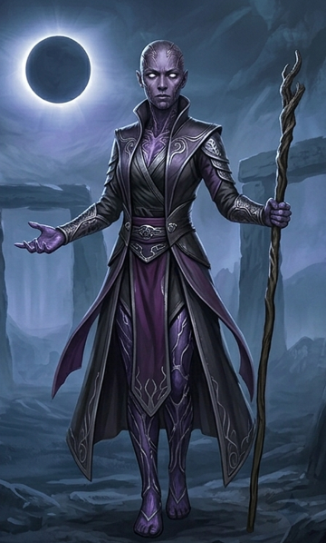
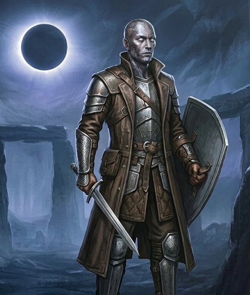
Coloro che danzano tra la Luce e l'Eclissi...
Solaris
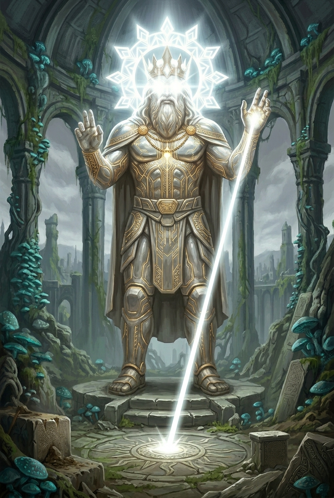
Dio del sole e della verità. I seguaci studiano il passato.
Aethon
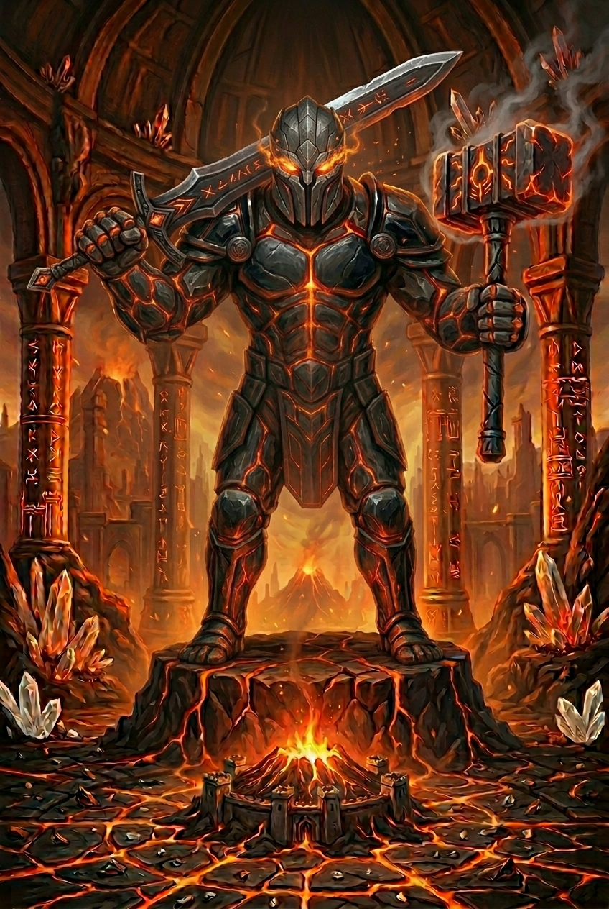
Dio della forgia. I seguaci costruiscono e proteggono.
Lirien
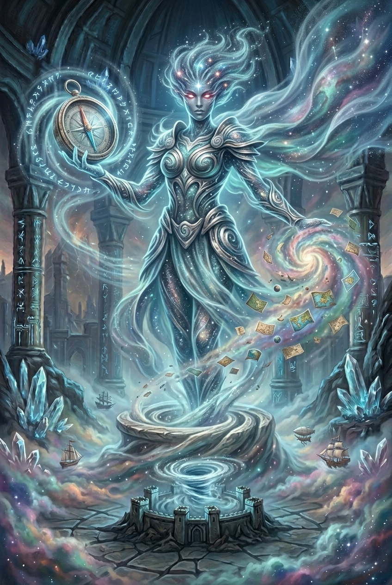
Dea dei venti. I seguaci credono nei cicli naturali.
Morreth
Dio dell'oblio. Vuole cancellare ogni traccia della civiltà.
Vael
Dea delle catene. Vuole governare attraverso la paura.
Keth
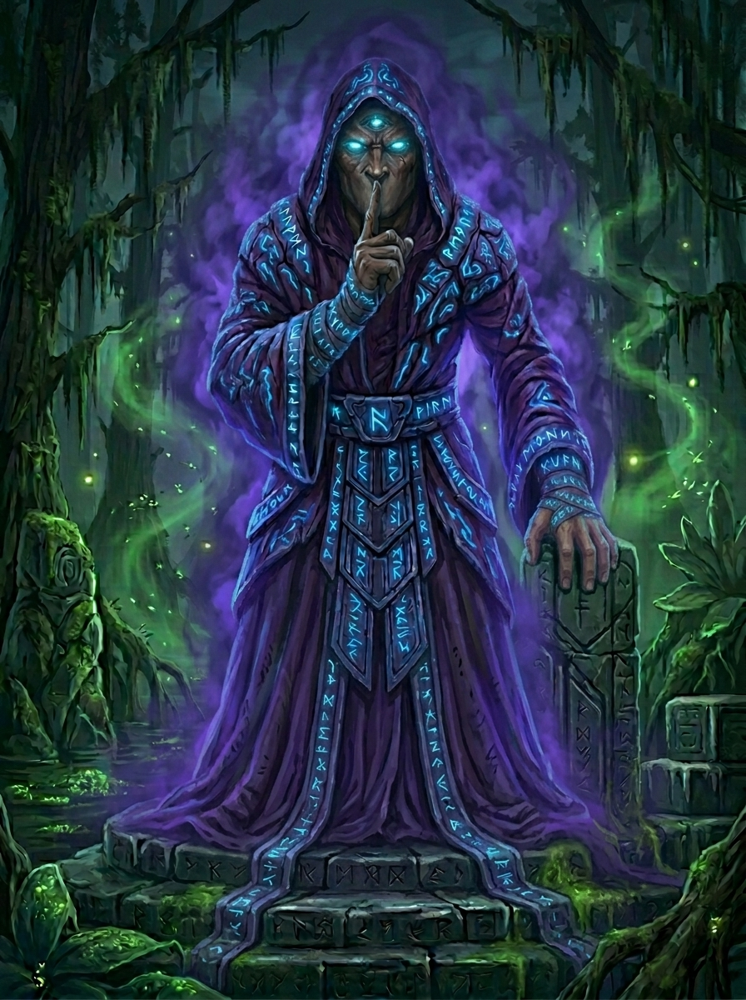
Dio del silenzio. L'entropia che riporta al nulla.
I Mestieri
> SISTEMA DI MESTIERI VOTATO ALLA COOPERAZIONE
Acheron non perdona i deboli. Qui la sopravvivenza non è un diritto, ma una conquista quotidiana. Per non soccombere all'Eclissi, ognuno ha dovuto votarsi a un'arte: una specializzazione che è al contempo salvezza e condanna.
In un mondo che si sgretola, la tua utilità è il tuo unico baluardo; ciò che offrirai alla tua gente sarà il cardine su cui ruoterà il tuo potere. Solo chi si specializza potrà elevare atti quotidiani a risultati che cambiano le sorti del mondo.
Tutti possono cercare di sopravvivere ed imparare a difendersi, ma su Acheron potrai fare molto più di questo...
ATTENZIONE: Il mestiere che sceglierai alla creazione del personaggio non sarà modificabile!
RADICIERE
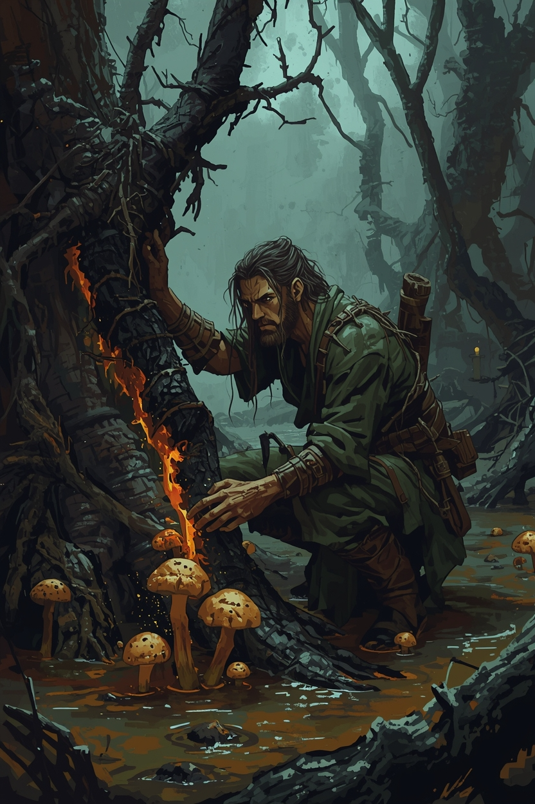
- Ara i campi e li coltiva.
- Bonifica terreni paludosi per allontanare bestie ostili dagli insediamenti.
- Raccoglie cibo di qualità per il proprio insediamento.

Descrizione sottoclasse...

Descrizione sottoclasse...
ARTEFICE
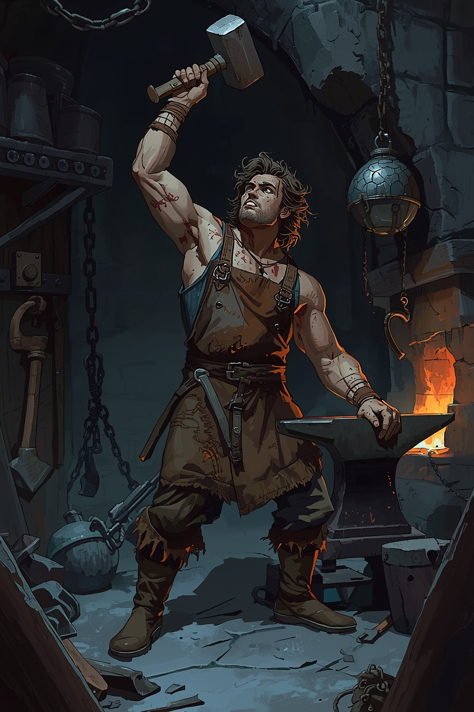
- Costruisce attrezzi di base in legno e metallo.
- Modifica terreni montuosi e collinari per gestire le risorse del territorio.
- Raccoglie pietra e metallo di qualità per il proprio insediamento.

Descrizione sottoclasse...

Descrizione sottoclasse...
FORAGGIATORE
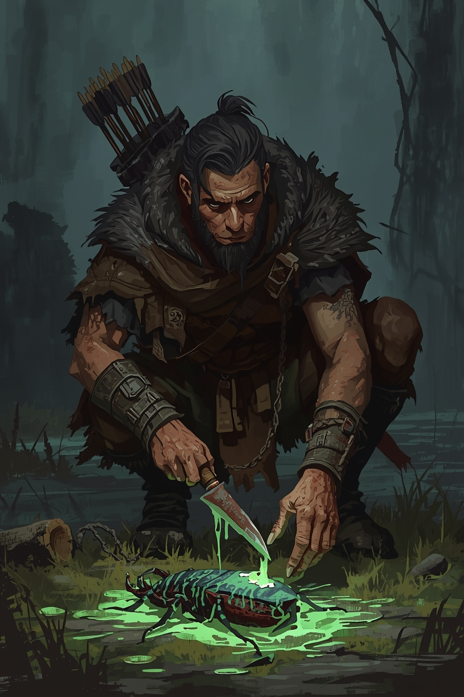
- Prepara cibi complessi che forniscono margini di vantaggio.
- Modifica terreni boschivi per salvaguardare la propria città.
- Raccoglie legname di qualità per il proprio insediamento.

Descrizione sottoclasse...

Descrizione sottoclasse...
FREGIATORE
- Ottiene cambi vantaggiosi nelle trattative con i mercanti.
- Ripristina l'integrità del proprio insediamento.
- Cuce abiti che forniscono prestigio* a chi li indossa.

Descrizione sottoclasse...

Descrizione sottoclasse...
Meccaniche
Lista peculiarità meccaniche:
- Sistema di apprendimento skill "Learning by doing.
- Meccanica di progressione comunitaria "Accampamento".
- Divisione fra raccolta individuale e raccolta comunitaria delle risorse.
- Meccanica di pesca dedicata.
- Loot dinamico basato su affissi e Tier.
- Sistema di prestigio legato al personaggio per accedere a quest stratificate.
- Mestieri curati nel dettaglio per massimizzare i vantaggi della cooperazione.
- Stili di combattimento variegati e bilanciati.
Client
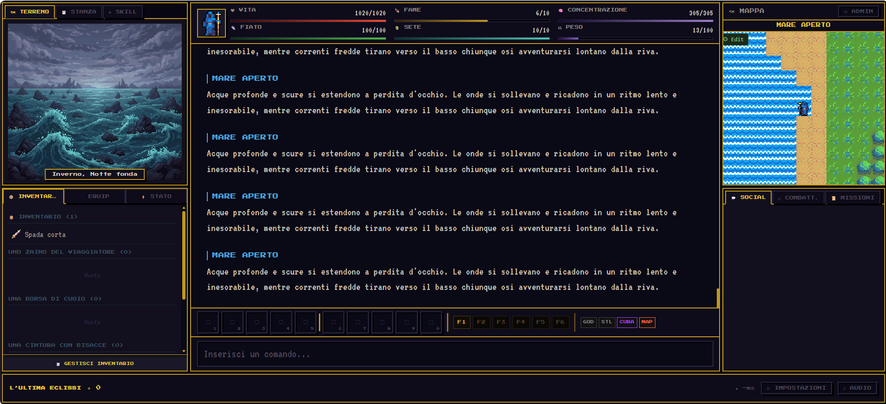
L'interfaccia utente è stata pensata per avere tutto sotto controllo in qualsiasi momento. E' possibile personalizzare la vista grazie a:
- Implementazione di tab che filtrano i messaggi mostrati: Combattimento, Dialoghi & social, Missioni attive.
- Tab dei vari blocchi trascinabili in base alle proprie preferenze.
- Possibilità di switchare la posizione della mappa, in alto a sx oppure in alto a dx.
- Toolbar "Arsenale" che permette di trascinare oggetti pronti all'uso con i tasti numerici, sia armi che consumabili.
- Gestione tattica degli slot inventario in stile hack'n'slash.